Creating screen nickname file
Creating screen nickname file is important to make testing easy.
There are several patterns with defining unique screen identity.
- Fixed layout
- Scrolling layout with fixed header
- Scrolling layout without fixed header
The latter is harder than the former.
Example 1: Fixed layout
Open Android Settings app.
Let’s see [Connected devices Screen] as example.

- Create
screensdirectory (if it does not exist). - Create a file with name
[Connected devices Screen].json.
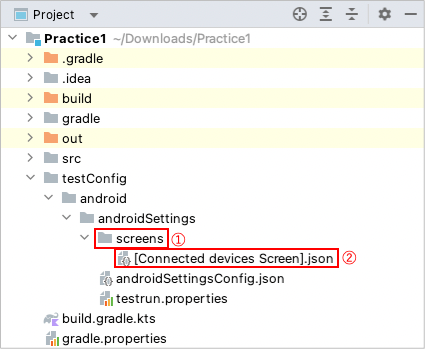
- Edit content as follows. key must be the same as the file name(without extension). ( See Screen nickname )
{
"key": "[Connected devices Screen]",
"identity": "",
"selectors": {
}
}
Capture
Connected Devicesscreen in Appium Inspector. (See Using Appium Inspector)- Start appium.
- Start Android 12 emulator.
- Start Appium Inspector.
- Edit capabilities for Android 12 emulator to start session of
Settingsapp. ClickStart Session. - Tap
Connected devicesin the emulator. - Tap
Refresh source & screenshotin Appium Inspector to captureConnected devicesscreen.
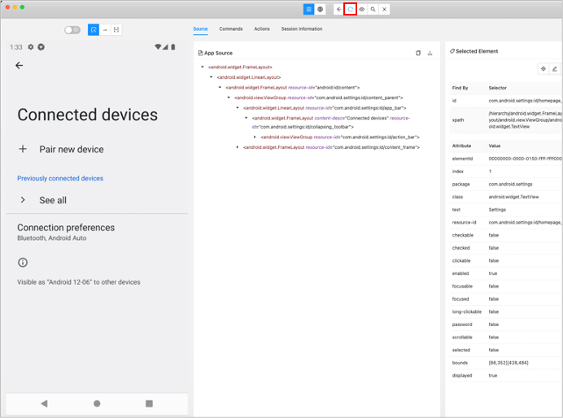
Look at the screen and define selector names. At this point values may be "" (empty).
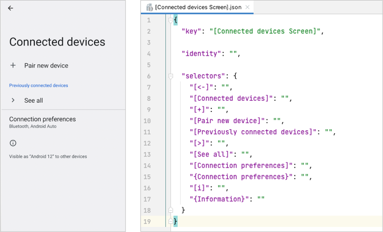
{
"key": "[Connected devices Screen]",
"identity": "",
"selectors": {
"[<-]": "",
"[Connected devices]": "",
"[+]": "",
"[Pair new device]": "",
"[Previously connected devices]": "",
"[>]": "",
"[See all]": "",
"[Connection preferences]": "",
"{Connection preferences}": "",
"[i]": "",
"{Information}": ""
}
}
- Inspect each elements to find unique attribute(s). (See Selector expression)
[<-]is filtered uniquely by content-desc ‘Navigate up’.
So you can define the selector as follows using accessibility filter."[<-]": "@Navigate up"[Connected devices]is filtered uniquely by content-desc ‘Connected devices’.
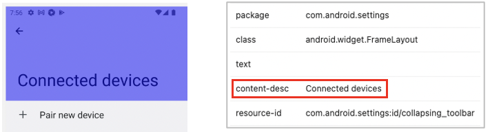
So you can define the selector as follows using accessibility filter."[Connected devices]": "@Connected devices"[Pair new device]is filtered uniquely by text.
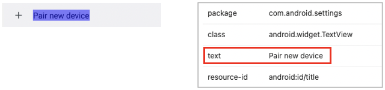
So you can define the selector as follows using text filter."[Pair new device]": "Pair new device"
In this case, the value can be omitted because the text is the same as nickname label(without brackets). ( See Selector nickname)"[Pair new device]": ""[+]is not filtered uniquely by its attributes.
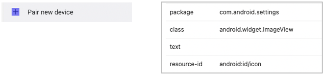
In this case, consider using Relative selector. You can define the selector as follows using:leftImage. See Relative selector(Direction based)"[+]": "[Pair new device]:leftImage"[Connection preferences]is filtered uniquely by text.
So you can define the selector as follows using text filter."[Connection preferences]": ""Bluetooth, Android Autois dynamic content of[Connection preferences], and is not filtered uniquely by its attributes.
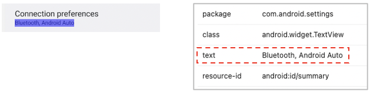
In this case, consider using Relative selector. You can define the selector as follows using:belowLabel. See Relative selector(Direction based)"{Connection preferences}": "[Connection preferences]:belowLabel"- Inspect the rest of elements and edit all selector nicknames. Finally, you can get selectors as follows.
{
"key": "[Connected devices Screen]",
"identity": "",
"selectors": {
"[<-]": "@Navigate up",
"[Connected devices]": "@Connected devices",
"[+]": "[Pair new device]:leftImage",
"[Pair new device]": "",
"[Previously connected devices]": "",
"[>]": "[See all]:leftImage",
"[See all]": "",
"[Connection preferences]": "",
"{Connection preferences}": "[Connection preferences]:belowLabel",
"[i]": "{Information}:aboveImage",
"{Information}": "Visible as *"
}
}
- Set
identitycombining selector nicknames to make it unique identity.
{
"key": "[Connected devices Screen]",
"identity": "[Connected devices][Pair new device][See all]",
"selectors": {
"[<-]": "@Navigate up",
"[Connected devices]": "@Connected devices",
"[+]": "[Pair new device]:leftImage",
"[Pair new device]": "",
"[Previously connected devices]": "",
"[>]": "[See all]:leftImage",
"[See all]": "",
"[Connection preferences]": "",
"{Connection preferences}": "[Connection preferences]:belowLabel",
"[i]": "{Information}:aboveImage",
"{Information}": "Visible as *"
}
}
- Create
ConnectedDevicesTest.ktunderkotlin/exercisedirectory.
package exercise
import org.junit.jupiter.api.Test
import shirates.core.configuration.Testrun
import shirates.core.driver.commandextension.*
import shirates.core.testcode.UITest
@Testrun("testConfig/android/androidSettings/testrun.properties")
class ConnectedDevicesTest : UITest() {
@Test
fun test1() {
scenario {
case(1) {
condition {
it.tap("Connected devices")
}.expectation {
it.screenIs("[Connected devices Screen]")
.exist("[<-]").accessIs("Navigate up")
.exist("[Connected devices]").accessIs("Connected devices")
.exist("[+]").classIs("android.widget.ImageView")
.exist("[Pair new device]").textIs("Pair new device")
.exist("[Previously connected devices]").textIs("Previously connected devices")
.exist("[>]").classIs("android.widget.ImageView")
.exist("[See all]").textIs("See all")
.exist("[Connection preferences]").textIs("Connection preferences")
.exist("{Connection preferences}").textIs("Bluetooth, Android Auto")
.exist("[i]").classIs("android.widget.ImageView")
.exist("{Information}").textStartsWith("Visible as ")
}
}
case(2) {
action {
it.tap("[<-]")
}.expectation {
it.exist("Network & internet")
}
}
}
}
}
- Run test. You can get a Html-report as follows when configured correctly.
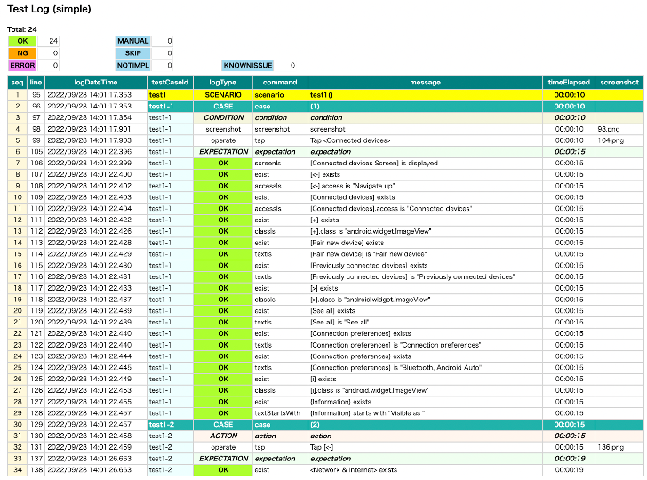
Example 2: Scrolling layout with fixed header
Open Android Settings app.
Let’s see [Network & internet Screen] as example.
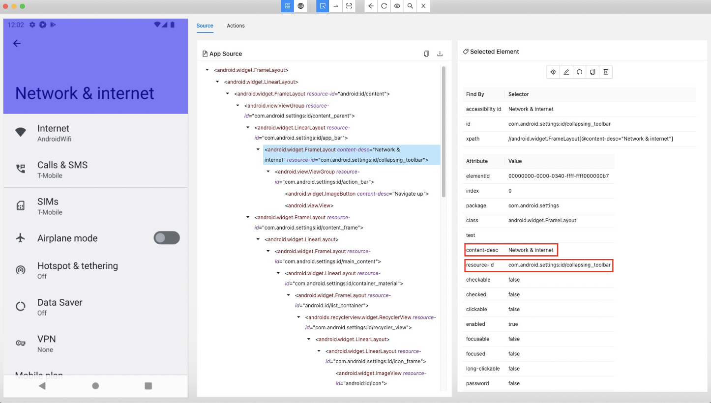 
This screen is scrollable and has fixed header area <#collapsing_toolbar>. In this case, you can define identity as follows.
{
"key": "[Network & internet Screen]",
"identity": "#collapsing_toolbar&&@Network & internet",
This is enough, but you can simply use title selector. ( See title selector)
{
"key": "[Network & internet Screen]",
"identity": "~title=Network & internet",
Screen nickname file for [Network & internet Screen] can be described as follows.
[Network & internet Screen].json
{
"key": "[Network & internet Screen]",
"include": [
],
"identity": "~title=Network & internet",
"selectors": {
"[<-]": "@Navigate up",
"[Network & internet]": "@Network & internet",
"[Internet]": "",
"{Internet}": "[Internet]:label",
"[Calls & SMS]": "",
"{Calls & SMS}": "[Calls & SMS]:label",
"[SIMs]": "",
"{SIMs}": "[SIMs]:label",
"[Airplane mode]": "",
"{Airplane mode switch}": "[Airplane mode]:switch",
"[Hotspot & tethering]": "",
"{Hotspot & tethering}": "[Hotspot & tethering]:label",
"[Data Saver]": "",
"{Data Saver}": "[Data Saver]:label",
"[VPN]": "",
"{VPN}": "[VPN]:label",
"[Mobile plan]": "",
"{Mobile plan}": "[Mobile plan]:label",
"[Private DNS]": "",
"{Private DNS}": "[Private DNS]:label",
"[Adaptive connectivity]": "",
"{Adaptive connectivity}": "[Adaptive connectivity]:label",
},
"scroll": {
"start-elements": "",
"end-elements": "[Adaptive connectivity]",
"overlay-elements": ""
}
}
:label
In this example, relative selector:label is used instead of :belowLabel. :label searches the nearest label in widget flow.
See Relative selector(Widget flow based) .
:switch
Relative selector :switch searches the nearest switch in widget flow.
See Relative selector(Widget flow based) .
“scroll” section
"scroll" section is for optimization (optional).
start-elements and end-elements are for detecting end of scroll efficiently. See Optimizing end of scroll
overlay-elements is for detecting overlay elements. Elements under overlay-elements are considered as not displayed.
Example 3: Scrolling layout without fixed header
Open Android Settings app.
Let’s see [Android Settings Top Screen] as example.
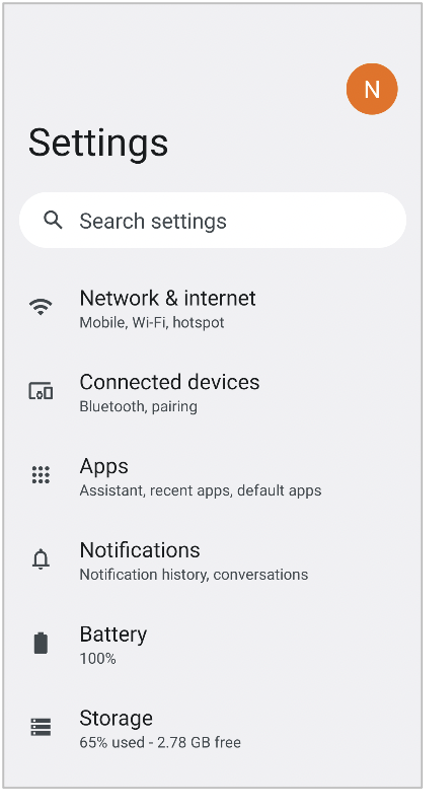
- Open shirates-core project.
- Open
[Android Settings Top Screen].jsonundertestConfig/android/androidSettings/screens.
{
"key": "[Android Settings Top Screen]",
"identity": "#recycler_view",
"satellites": ["Battery", "Accessibility", "Passwords & accounts", "Tips & support"],
"selectors": {
"[Account Avatar]": "#account_avatar",
"[Settings]": "#homepage_title",
"[Search Button]": "<#search_action_bar>:inner(1)",
"[Search settings]": "#search_action_bar_title",
"[Network & internet]": "",
"{Network & internet}": "[Network & internet]:label",
"[Network & internet Icon]": "[Network & internet]:leftImage",
"[Connected devices]": "",
"{Connected devices}": "[Connected devices]:label",
"[Connected devices Icon]": "[Connected devices]:leftImage",
"[Apps]": "",
"{Apps}": "[Apps]:label",
"[Apps Icon]": "[Apps]:leftImage",
"[Notifications]": "",
"{Notifications}": "[Notifications]:label",
"[Notifications Icon]": "[Notifications]:leftImage",
"[Battery]": "",
"{Battery}": "[Battery]:label",
"[Battery Icon]": "[Battery]:leftImage",
"[Storage]": "",
"{Storage}": "[Storage]:label",
"[Storage Icon]": "[Storage]:leftImage",
"[Sound & vibration]": "",
"{Sound & vibration}": "[Sound & vibration]:label",
"[Sound & vibration Icon]": "[Sound & vibration]:leftImage",
"[Display]": "",
"{Display}": "[Display]:label",
"[Display Icon]": "[Display]:leftImage",
"[Wallpaper & style]": "",
"{Wallpaper & style}": "[Wallpaper & style]:label",
"[Wallpaper & style Icon]": "[Wallpaper & style]:leftImage",
"[Accessibility]": "",
"{Accessibility}": "[Accessibility]:label",
"[Accessibility Icon]": "[Accessibility]:leftImage",
"[Security]": "",
"{Security}": "[Security]:label",
"[Security Icon]": "[Security]:leftImage",
"[Privacy]": "",
"{Privacy}": "[Privacy]:label",
"[Privacy Icon]": "[Privacy]:leftImage",
"[Location]": "",
"{Location}": "[Location]:label",
"[Location Icon]": "[Location]:leftImage",
"[Safety & emergency]": "",
"{Safety & emergency}": "[Safety & emergency]:label",
"[Safety & emergency Icon]": "[Safety & emergency]:leftImage",
"[Passwords & accounts]": "",
"{Passwords & accounts}": "[Passwords & accounts]:label",
"[Passwords & accounts Icon]": "[Passwords & accounts]:leftImage",
"[Google]": "",
"{Google}": "[Google]:label",
"[Google Icon]": "[Google]:leftImage",
"[System]": "",
"{System}": "[System]:label",
"[System Icon]": "[System]:leftImage",
"[About emulated device]": "",
"{About emulated device}": "[About emulated device]:label",
"[About emulated device Icon]": "[About emulated device]:leftImage",
"[About phone]": "",
"{About phone}": "[About phone]:label",
"[About phone Icon]": "[About phone]:leftImage",
"[Tips & support]": "",
"{Tips & support}": "[Tips & support]:label",
"[Tips & support Icon]": "[Tips & support]:leftImage",
"[:Summary]": ":belowLabel"
},
"scroll": {
"start-elements": "[Network & internet]",
"end-elements": "{Tips & support}",
"overlay-elements": "[Search Button][Search settings]"
}
}
“identity” and “satellites”
If you can always access elements that consist of screen identity, you should use these elements for identity. The former Example 1 and Example 2 are in this case.
If you can not always access such elements, you should consider another workaround. In case of [Android Settings Top Screen], you can scroll up or down.
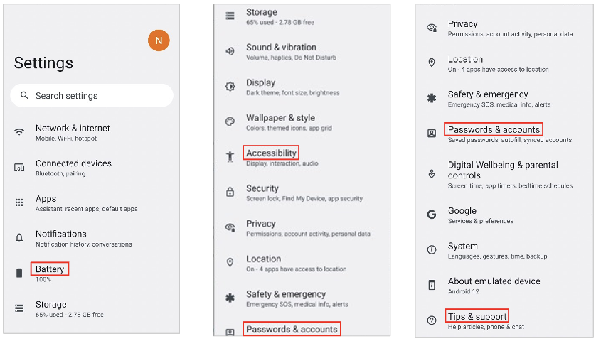
This screen does not have fixed header area. While scrolling there is no position-fixed element for "identity". In this case you can use "satellites" to complement unique key for screen identification. "satellites is a list of selector.
In [Android Settings Top Screen].json, you can specify "identity" and "satellites" as follows.
{
"key": "[Android Settings Top Screen]",
"identity": "#recycler_view",
"satellites": ["Battery", "Accessibility", "Passwords & accounts", "Tips & support"],
...
This means that the screen is considered as "[Android Settings Top Screen]" when the screen has "#recycler_view" and has at least one of "Battery", "Accessibility" , "Passwords & accounts" or "Tips & support". The complex key(consists of identity and satellite key) must be unique over screens.